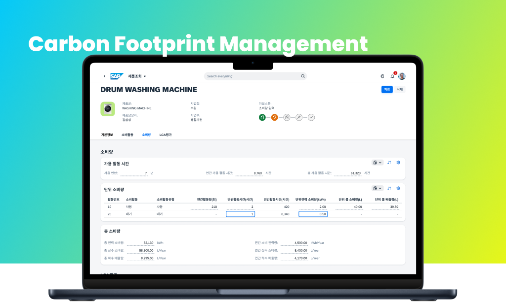
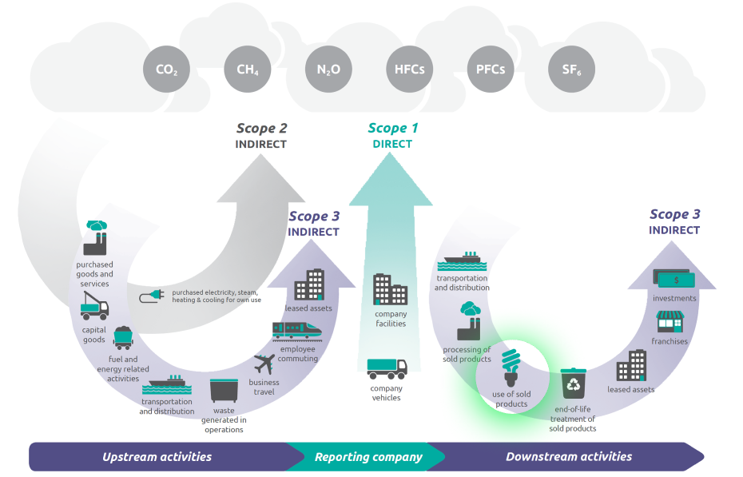
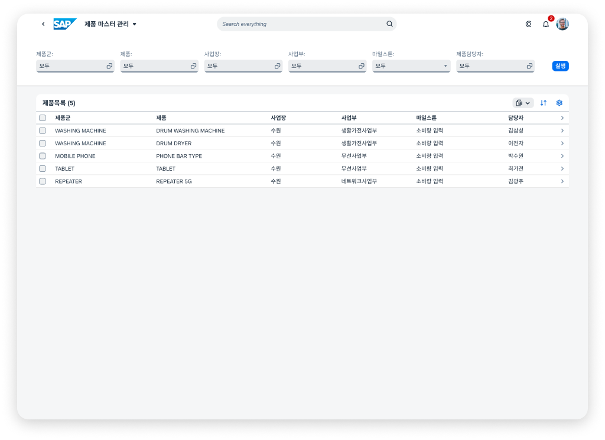
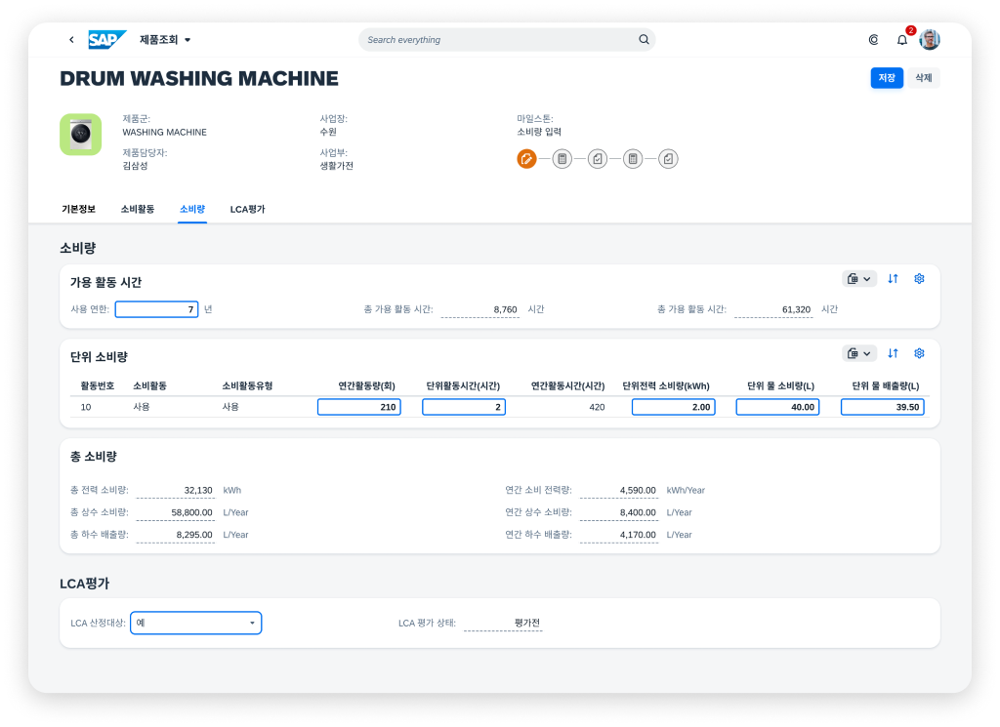
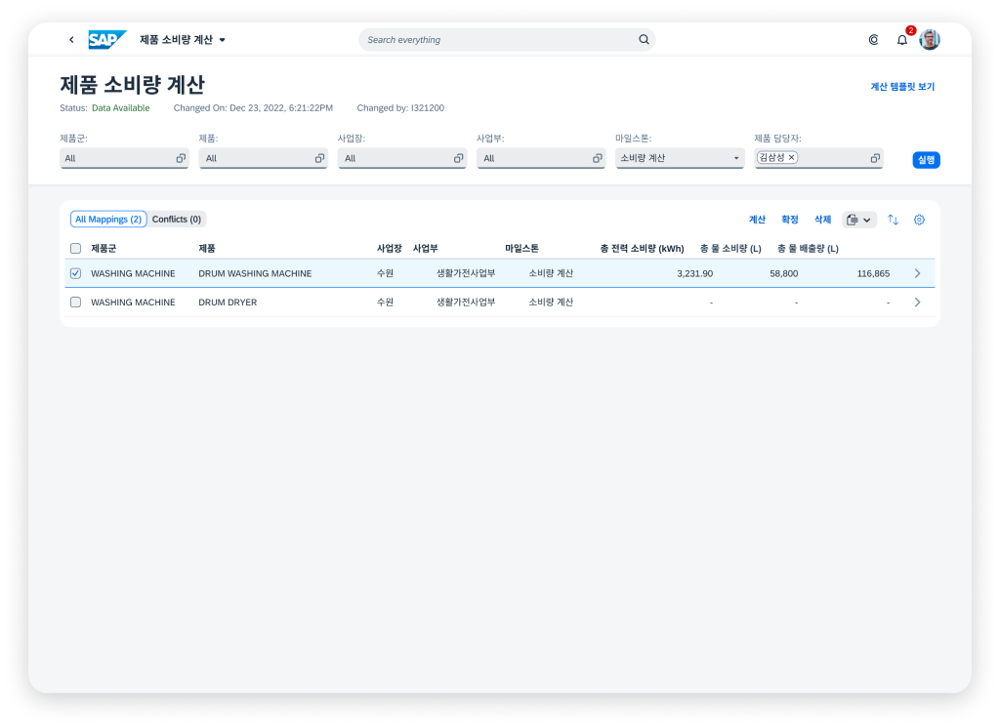
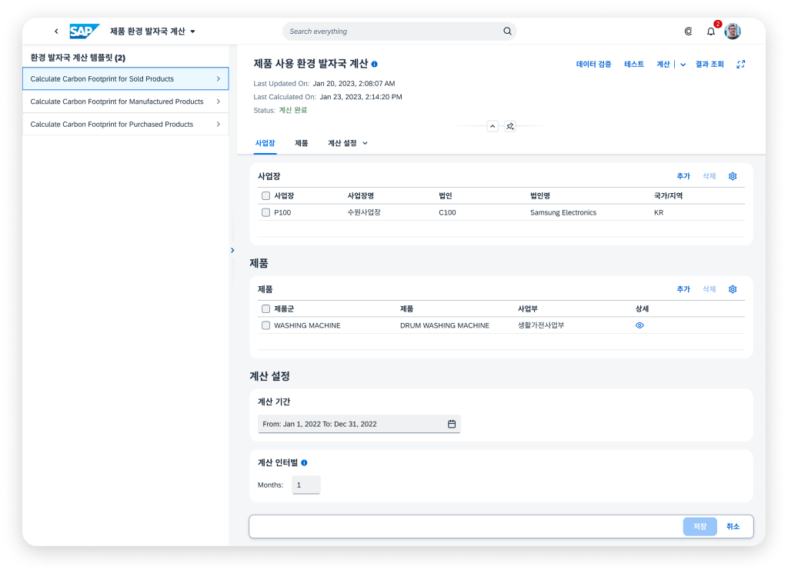
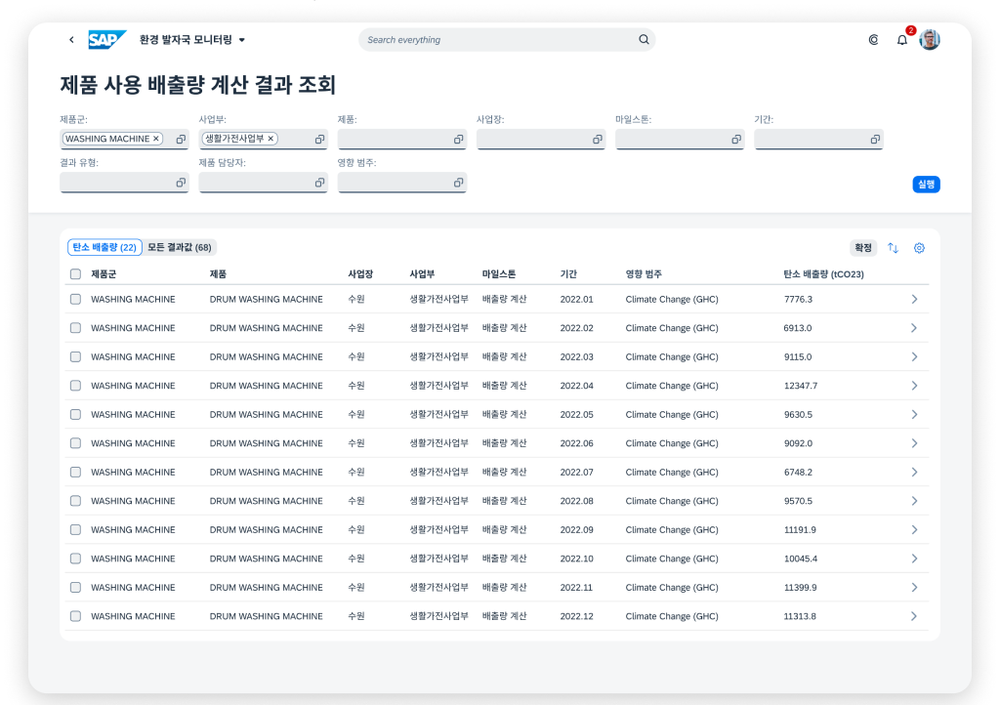
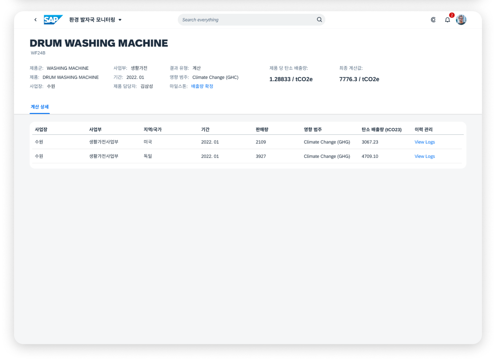

Samsung committed to carbon neutrality by 2050 and asked SAP for a proof of concept to measure and manage its emissions. I led design of the product-level scenario: the emissions Samsung's products create while customers use them.


Use of sold products sits in downstream Scope 3. Source: WRI/WBCSD Corporate Value Chain (Scope 3) Accounting and Reporting Standard, p. 5.
As design lead, I worked with environmental-solution, analytics and solution experts to design Samsung's carbon-emission management platform, at both the corporate and the product level.
My focus was the use-of-sold-products scenario: defining how a product is registered, how its energy and water consumption is calculated, and how the resulting emissions are monitored and reported.
Review new products in the product master, see which still need registering, and assign who enters each product's consumption — the system makes those assignments automatically.

The registration type for electricity use is mapped automatically to each country's energy regulations, with the formula shown — or chosen by hand. Users then fill each field the formula needs.

Confirm annual and lifetime electricity and water use, scale it by sales volume to a company-wide total, account for tap and sewage water, then validate the data and calculate total consumption.

Map emission factors for electricity, water and filters, calculate greenhouse-gas emissions from templates for sold, manufactured and purchased products, and prepare the regulatory report.

Review emissions by model, region, country and corporate level, confirm results for reporting, and keep the history of every recalculation.


This project showed me how carbon-emission management works end to end as a business task: the key roles each step needs and how they collaborate, how companies break down and allocate reduction targets, and how emission data is collected and monitored to reach them.
It also deepened my understanding of how enterprise software can help companies run a more sustainable business.
Next: multi-language support, and handling differences in units of measurement across countries.